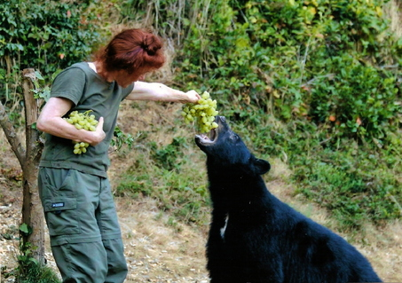

Lift
An 8 Year Retrospective
Scala eXchange 2014
David Pollak / @dpp
Thanks to the Lift Committers:
Burak Emir -
Diego Medina -
Peter Petersson -
David Bernard -
Kris Nuttycombe -
Maciek Starzyk -
Philipp Schmidt -
David Pollak -
Alex Boisvert -
Debby Meredith -
Stepan Koltsov -
Alex Payne -
Marius Danciu -
Indrajit Raychaudhuri -
Andreas Joseph Krogh -
Ross Mellgren -
Vassil Dichev -
Carsten -
Joe Barnes -
Dave Whittaker -
Ján Raška -
Jonas Bonér -
Eric Torreborre -
Jonathan Hoffman -
Julien Wetterwald -
Franz Bettag -
Viktor Klang -
Daniel Green -
Jorge Ortiz -
Torsten Uhlmann -
Steve Jenson -
Mads Hartmann Jensen -
Timothy Perrett -
Francois Bertrand -
Tyler Weir -
Reuben Doetsch -
Derek Chen-Becker -
Jeppe Nejsum Madsen -
Chris Wilkes -
Harry Heymann -
Heiko Seeberger -
Al Thompson
About @dpp
- Founded Lift web framework
- Wrote a bunch of commercial spreadsheets
- Crazy passionate lawyer-trained tech dude
- The Lift codebase is more than 8 years old
- Top 3% of team size, commits, velocity, age
- More than a software project: Volunteer effort
'Hello, Joe' & Rubyconf 2006
Mocking another language turned me off.
As did disdain for types and "Enterprisey" things.
Googled "Functional language, jvm"
Found Scala
- Best of Ruby and Java
- Java interop "Just Worked"™
- Seemed like the best thing EVER!!

Scala 2.2 days
- Very small community (wiki included most members)
- Friendly, mostly academic
- Jon Pretty: the commercial user

Me: Mostly Web Dev
- Had done a couple of (proprietary) web frameworks
- Spring (the hotness at the time) sucked
- So, I decided to do my own web framework... for Scala

Pre-Lift: Scala with Sails
- ORM and some Rails-like controller stuff... and Textile
- Dec 7, 2006 - Feb 2007
- Lift name from Roger Rohrbach from Gabble. Runner up: Escalate
Feeding Bears

- Title going back 20+ years
- John Irving: Hotel New Hampshire, etc.
- Balancing community, customers, partners, etc.
Used Lift for photo-sharing dropbox thingie
- Focused on REST
- Some support for Actors and Comet
- Tool-chain challenge
Tim O'Reilly, May 4, 2007
Not to be left out in the “doing cool things on the web”, is a fairly
new framework for Scala (another highly functional language with some similar features to Erlang and Smalltalk) called lift. There’s an interesting post by the author showing a twittr clone he claims can scale to
handle twittr’s traffic with only 2 machines thanks to message
persistence with the Actor based model.
lift stresses security, developer productivity, ease of deployment, ease of maintainability, performance, and compatibility with existing systems.
Lift's description, today
- Lift applications are:
- Secure
- Developer centric
- Designer friendly
- Scalable
- Modular
- Interactive like a desktop app
Early Stuff
- Steve Jenson, Alex Boisvert, and I lived a few blocks from each other
- I vowed never to do a release ... only broke vow once
- David Bernard (another twin dad) set up the build process, system, and infrastructure

Innovation Games
Stuff at SAP
Ev's Thing
ESME
AMPLab Scala Preso
JavaOne 2009
Lift Firsts
Maven
Git & GitHub
Community Maven Repo: Scala-tools
Code of Conduct
DOM Templating
Misc Tech Stuffs
- Futures in Scala
- Non-library Actors in Scala